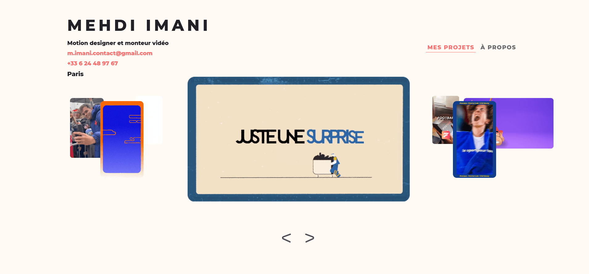

Portfolio for Motion Designer
Caroussel de projets pour un motion designer

Visiter
À Propos du Projet
Portfolio interactif conçu pour un motion designer, mettant en valeur ses créations à travers un carrousel de projets dynamique et élégant. Le site utilise JavaScript vanilla pour créer des animations fluides et des transitions personnalisées, offrant une expérience utilisateur immersive. L'interface épurée et moderne s'adapte parfaitement à tous les écrans grâce à un design responsive soigneusement élaboré en CSS. Le déploiement sur Cloudflare Pages assure des performances optimales et un chargement rapide des contenus multimédias. Une attention particulière a été portée à l'accessibilité et à l'optimisation SEO pour maximiser la visibilité du portfolio.
Technologies Utilisées
- JavaScript
- HTML
- CSS
- Cloudflare Pages